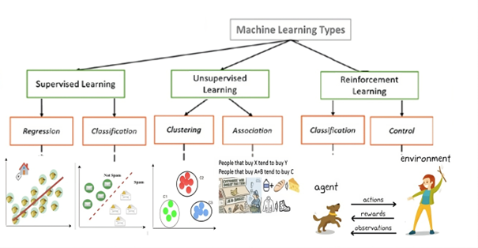

Machine Learning Basics
Machine learning is a subset of artificial intelligence that enables systems to learn from data, make predictions, and improve over time. This article introduces key concepts and applications of machine learning.
Types of Machine Learning
Supervised Learning
In supervised learning, algorithms are trained on labeled datasets, akin to a student learning with the aid of a knowledgeable teacher. These algorithms make predictions or categorize data—examples include regression, where we predict housing prices based on features, or classification, like distinguishing between emails that are spam or not.
Unsupervised Learning
Unsupervised learning involves algorithms learning from unlabeled data by identifying hidden structures. It can be compared to explorers trying to understand a new territory. Key techniques include clustering and association, such as grouping customers with similar buying habits or finding items that are often bought together.
Reinforcement Learning
Reinforcement learning is similar to training an animal through a system of rewards and discipline. AI agents are trained to achieve goals, like a robot learning to navigate a maze, improving through trial and error.
How do we Train a Model?
In an example of classifying emails as legitimate or spam, the training process involves several steps:
- Data Collection: Gather a variety of email samples for analysis.
- Feature Construction: Identify important elements—such as specific words in an email that suggest 'spam' like "win money" or "urgent".
- Feature Evaluation: Discern patterns and assign them weights based on their relevance to spam classification.
- Training the Model: Use the data and features to 'educate' the model, allowing it to learn over time and improve its accuracy.
- Classification: The model’s "final exam," where it demonstrates its learning by accurately identifying new data as spam or not based on its training.
AI as a Tool
AI offers a range of benefits across industries but also introduces new challenges:
- Healthcare: AI algorithms assist in diagnosing diseases, sometimes with greater accuracy than human doctors.
- Transportation: AI powers autonomous vehicles, potentially reducing accidents caused by human error.
- Social Media: However, AI can amplify misinformation, as algorithms prioritize engagement over accuracy.
- Employment: In job applicant screening, AI can introduce biases if not carefully monitored and regulated.
Choosing the Right Solution
It's important to recognize that not every problem requires an AI solution. For example:
- A small bookstore managing its inventory might find traditional database software more fitting and cost-effective than an AI system.
- A local bakery scheduling its staff might only need simple spreadsheet software, rather than a complex AI-based scheduling tool.
In such cases, simpler solutions can be more efficient and practical.